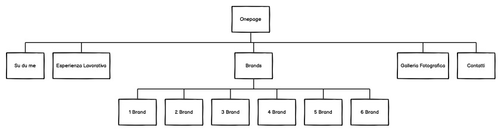
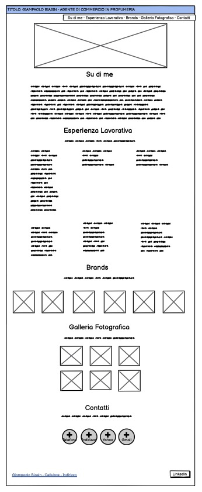
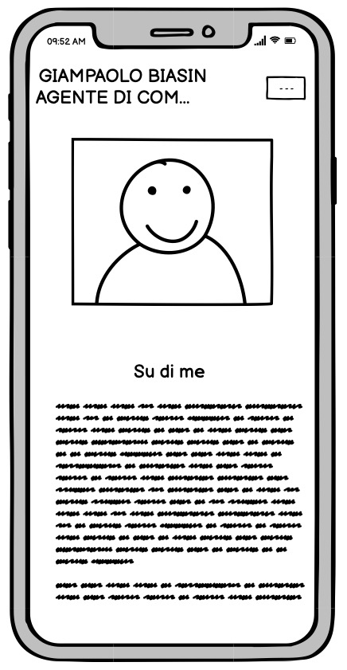
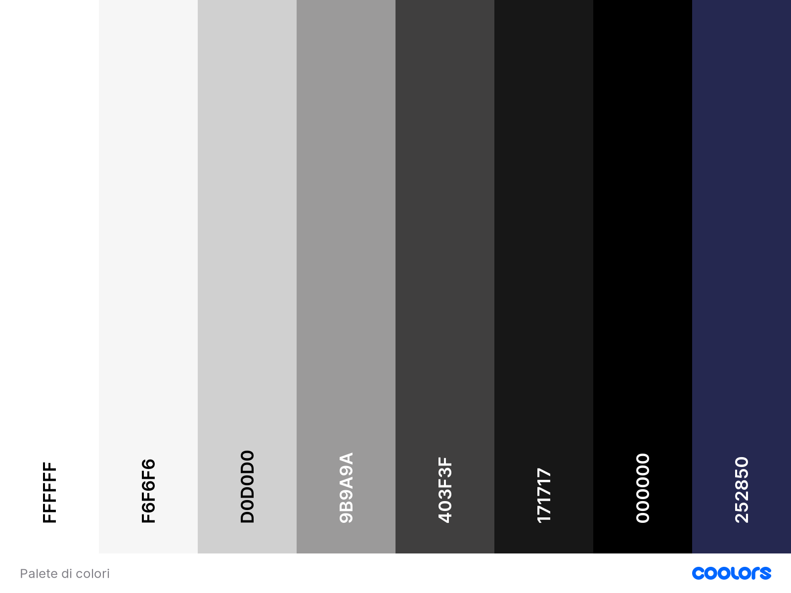
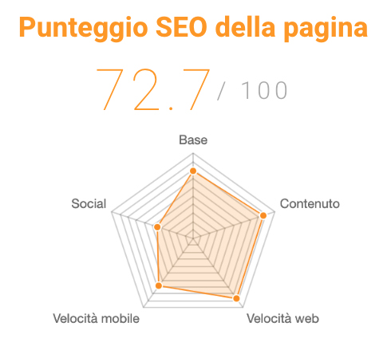

Abstact
L’obiettivo di questo sito è di presentare in modo chiaro ed esaustivo il rappresentante di commercio in profumeria Giampaolo Biasin, evidenziare il suo percorso lavorativo nell’ambito della profumeria di nicchia e far conoscere alcuni dei marchi da lui rappresentati nel territorio italiano. Questo sito inoltre nasce anche con l’obiettivo di essere un biglietto da visita più multimediale rispetto hai classici mezzi utilizzati dagli agenti di commercio per farsi conoscere.
Project Management Plan
Obiettivi
Ho deciso di fare questo sito web prendendo come riferimento principale la strategia di comunicazione della “visual storytelling” ovvero un tipo di narrazione che utilizza principalmente come strumento di strategia l’empatia e la curiosità. L’utente che interagisce con il sito si può immedesimare nelle esperienze lavorative, se pratica lo stesso lavoro, o se in futuro vuole intraprendere una carriera lavorativa in questo settore, può diventare un mezzo per suscitare interesse e curiosità.
È un metodo d’approccio poco invadente nei confronti dell’utente che interagisce con la piattaforma poiché rappresenta contenuti non troppo “impegnativi” da comprendere e che superano gli ostacoli della lettura veloce con termini complessi.
Target utenti
Il sito non è rivolto solo a chi lavora in questo settore ma in generale per tutti coloro che sono appassionati al mondo della profumeria o che vogliono avere determinate informazioni su dei brands.
Competitors
Il lavoro di agente/rappresentante di commercio non ha mai avuto un’attività multimediale. I brands conoscono e si mettono in contatto con l’agente che vogliono che rappresenti il proprio marchio principalmente mediante un passaparola e non attraverso il coinvolgimento di piattaforme online. Con la pandemia da Covid-19 e il successivo lockdown il mondo dei rappresentanti di commercio ha deciso di dare una svolta ai mezzi tradizionali e di approdare online così da rendere più immediato l’approccio con i futuri collaboratori. Questo sito web non ha di conseguenza competitors diretti perché è un progetto nuovo che nasce come stimolo per tutti gli agenti di commercio con l’obiettivo di rendere questo mestiere più interattivo e comunicativo.
Nello stesso tempo i veri e propri competitors in quest’ambiente sono le profumerie che vendono online lo stesso prodotto. La maggior parte delle profumerie ha un sito web e l’obiettivo su cui bisogna lavorare sempre di più è l’unicità e la promozione per far si che l’utente sia più stimolato a comprare un prodotto in un determinato sito web piuttosto che in un altro.
La vendita di profumi online è acconsentità unicamente dai siti ufficiali dei marchi, dalle profumerie con il consenso dei produttori e dai distributori del territorio in cui si opera.
Di conseguenza chi vende i prodotti attraverso altri distributori diventa competitors “illegittimo”.
Architettura del sito
Il sito è mono pagina (onepage) a scorrimento verticale, nel quale tutti i contenuti sono esposti in una singola pagina suddivisa in sezioni. L’unica sezione che rappresenta a sua volta altre pagine sono i brands. Il sito onepage è immediato, semplice e diretto ideale per chi all’interno deve esporre pochi contenuti. L’utente ha a disposizione con maggiore velocità ed immediatezza tutto quello che sta cercando. Il sito onepage è utilizzato dalla maggior parte dei liberi professionisti come Giampaolo Biasin che come obiettivo hanno quello di far conoscere la propria attività professionale.
- “Su di me”: include una breve presentazione del rappresentante di commercio Giampaolo Biasin
- “Esperienza Lavorativa”: include l’esperienza lavorativa nell’ambito della cosmesi, make-up e profumeria ed è esposto il distributore italiano
- “Brands”: include la spiegazione di sei dei brand rappresentati da Giampaolo Biasin, in un’altra pagina
- “Galleria Fotografica”: include alcune foto di Giampaolo Biasin in compagnia di amici, colleghi e grandi nasi della profumeria internazionale
- “Contatti”: include tutti i contatti di Giampaolo Biasin, numero telefonico, due emal e indirizzo di casa (Collegato a Google Maps) e un bottone che conduce al suo profilo Linkedin
Wireframe delle pagine del sito
 
Look and Feel: scelte grafiche
Ho scelto per il sito uno stile molto classico con una palette colori che va dal bianco per lo sfondo fino al nero per i testi e i titoli, il blu per alcuni titoli. In aggiunta ci sono i colori relativi ai vari social.
Nelle immagini esposte ci sono principalmente colori dai toni caldi con un richiamo al blu nei vestiti di Giampaolo Biasin, in quanto rappresenta il suo colore preferito. Anche dal punto di vista grafico e interattivo la funzionalità del sito è molto semplice ed intuitiva.
Linguaggi e Strumenti
- Html + CSS
- “Bootstrap” starter template (griglia, icone e componenti base)
- “Stoke 7” per le icone
- “Javascript” per i cookies
- “Git Hub” per la pubblicazione del sito
- “Balsamiq” per la realizzazione del diagramma dell’architettura del sito e dei wireframe delle pagine
- “Google Maps” per il collegamento all’indirizzo
- “Google Analytics” per il controllo
- "Tester online SEO" per analizzare l'indicizzazione della pagina e per controllare la configurazione dei tag "alt" e "title". I tag appena citati sono utili sia a livello di SEO che per migliorare l'accessibilità al sito a persone con disabilità. Esempio: persone con problemi alla vista o cieche.
- "Coolors" per la palette di colori
Communication Strategy
Background
Il sito onepage è utilizzato molto in ambienti lavorativi come ristoranti, locali e negozi, i quali hanno come obiettivo quello di farsi conoscere dagli utenti e di conseguenza avere “a portata di mano” ogni tipo d’informazione o contatto diretto.
Questo tipo di sitoweb (sito web per far conoscere un rappresentante di commercio) non è abituale trovarlo nel web poiché essendo un lavoro da libero professionista e non avendo una sede lavorativa precisa o uno staff può sembrare poco utile.
Obiettivi comunicativi
I principali obiettivi di comunicazione del sito web sono tre:
- far conoscere la figura professionale di Giampaolo Biasin a più utenti possibili (raggiungere minimo 50); non solamente del settore
- far conoscere alle persone alcuni marchi di profumi di nicchia, esposti nella sezione dei brands
- far conoscere alle persone chi c’è dietro alla figura di un rappresentante di commercio
Target audience e messaggio
Il sito è rivolto principalmente a chi lavora nell’ambito della profumeria e per fornire qualche informazione essenziale della figura di Giampaolo Biasin.
Promozione
La promozione del sito è avvenuta principalmente tramite passaparola tra persone del settore (agenti di commercio, profumerie ecc;) e tramite social, con storie Instagram.
Valutazione dei risultati
Testo
Testo